Using Python and openCV to extract and manipulate plot lines
Someone on the PLOTS-spectrometry mailing list posted two spectrographs they'd collected with their PLOTS-spectrometer, and also a plot the LED manufacturer provided.
The wondered why their spectrogram didn't look like either of the two plots provided by the manufacturer, and I thought they might look similar if the plot lines were added or multiplied with each other.
So I made this script to select the plot line color, then extract colors close to that into separate images.
With these images, the maximum Y value for each column was found, and Y values from the corresponding plots were added and also multiplied, then saved to new output images.
LED spectrograms in question

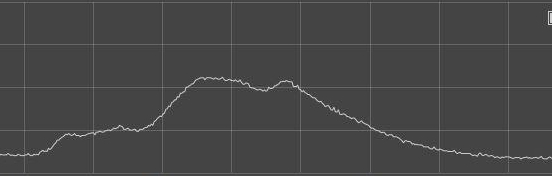
Using this dual-line graph as input
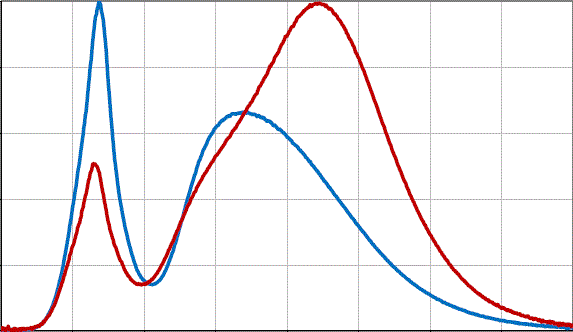
These binary images were extracted of the individual plot lines
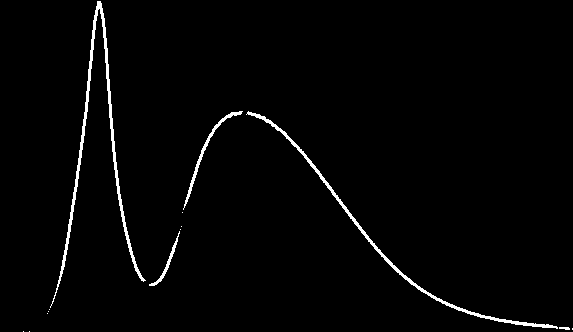
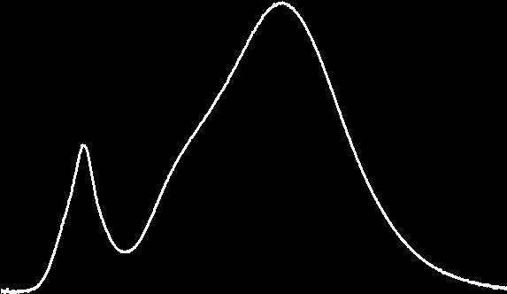
Plots' Y-values added together
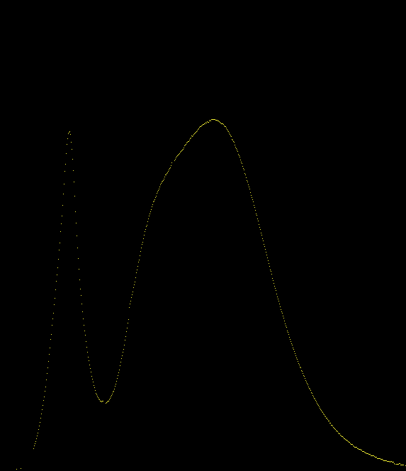
Added, then divided by 2
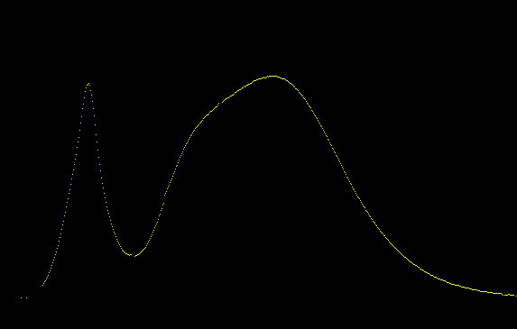
Square root of the multiples ( sqrt(y1 * y2) )
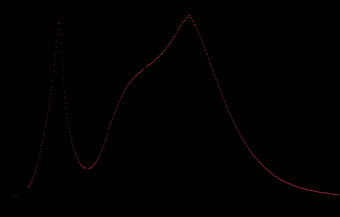
Graph of added (yellow) and multiplied (red) lines, both were scaled down.

Using this triple-line graph image as input
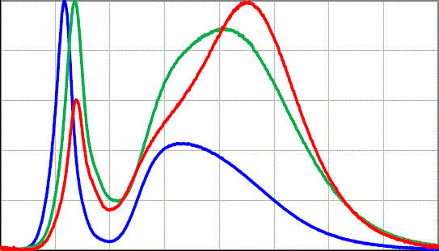
The results from processing:
Binary images of extracted plots
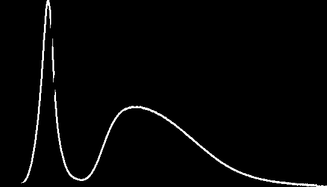
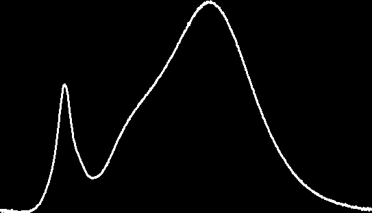
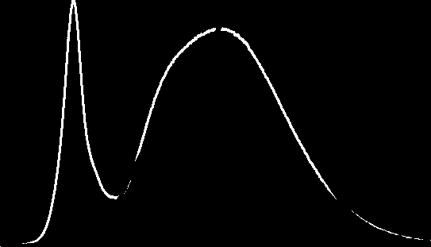
Added
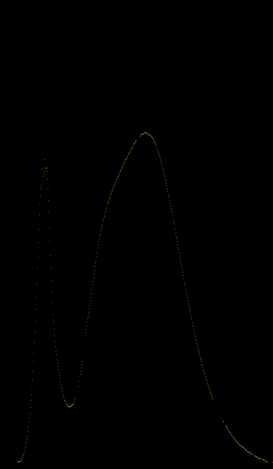
Added then divided by 3
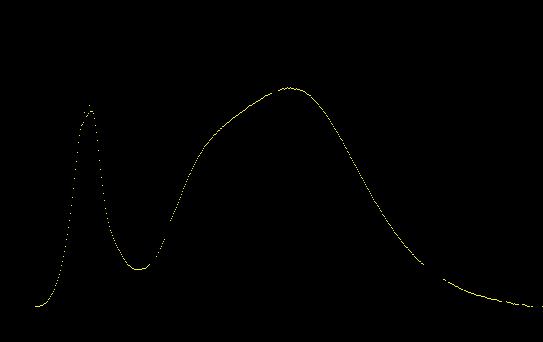
Cube root of the multiples ( cube_root(y1 * y2 * y3) )
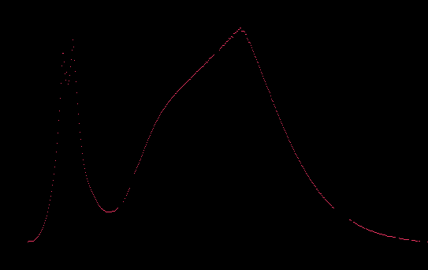
Graph of added (yellow) and multiplied (red) lines, both were scaled down.
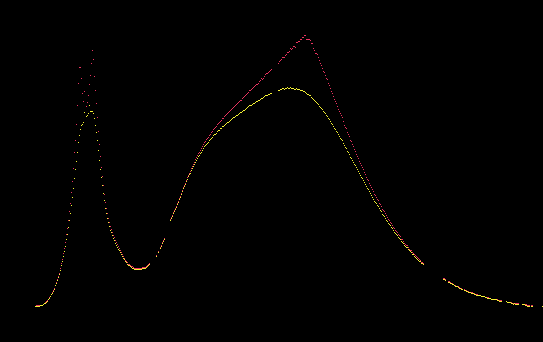
So to sum things up, these were in question
And what I thought might have looked similar after some computation.
What do you think? Leave me some Feedback